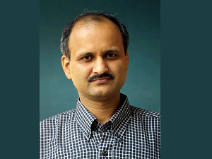
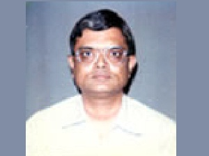
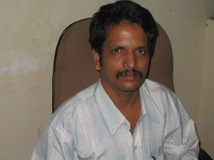

|  | Dr. S. CHAKRAVERTY
Professor, Department of Mathematics National Institute of Technology Rourkela Rourkela - 769 008 Odisha, INDIA Talk Title : Fuzzy set theory applications in science and engineering Abstract:In general, science and engineering problems depend upon various system parameters such as mass, geometry, material properties, external loads and boundary conditions etc. which are usually defined exactly or considered as deterministic. Rather than the deterministic or exact values, we may have only the vague, imprecise and incomplete information about the variables and parameters which are uncertain in nature. Hence, it is important and challenging to model these type of uncertainties in the said problems. Basically these may be modelled through probabilistic, interval or fuzzy approach.Probabilistic theory requires sufficient information about the variables and parameters involved in it. On the other hand, when we have lack of knowledge or incomplete information about the variables and parameters then interval or fuzzy approach may be advantageous. In view of the above, this lecture will include about handling fuzzy/interval algebraic system of equations and eigenvalue problems by the use of fuzzy set theory. Proposed methods are validated by studying different uncertain interdisciplinary problems such as static and dynamic analysis of structural systems andsystem identification problems from uncertain data, etc. Read More |
|  | Prof. K.K. Shukla Professor and Head, Department of Computer Science and Engineering, Indian Institute of Technology (BHU), Varanasi Talk Title : Algorithm Design for Mining Data Streams Abstract: Most of the popular data mining algorithms assume that all our data is available when we want it. However, in this talk I focus on mining very large volumes of data such that it will not fit into the memory. We will focus on the case where the data arrives so fast that it must be processed immediately, or it will be lost. Important problems in this setting include data sketching / sampling, query processing on streams, filtering, counting distinct elements, frequent item sets etc. Read More |
|  | Prof. B. K. Panigrahi, IIT Delhi. Qualifications: Ph.D. (Sambalpur University). Talk Title: PSO and Its Variant for Optimization Abstract:Kennedy and Eberhart in 1995 introduced the concept of function-optimization by means of the particle swarm optimization (PSO). This initial version of PSO is treated as the basic PSO. Since then many variants of PSO has been immerged for global optimization. The objective of the PSO is to find the best solution in the search space by random search process. Initially, at the starting, in the search space several random solutions are assumed, which constitutes the swarm. Each member of the swarm, a probable solution in the search space is treated as a particle. Each particle is initially given a position and velocity in the multi dimensional search space. As the search progresses, each individual particle changes its position and velocity owing to its own experience and the experience of the best member of the swarm. Thus this search can be treated as an adaptive random search, where at each step (iteration) of the search process, the particle changes its search pattern (both position and velocity) depending its own best performance till now and the present best particle in the swarm. PSO does not require any derivative information of the function to be optimized. Owing to the simple procedure, very rudimentary mathematical concept, PSO attracts many researchers to solve many of the real world engineering optimization problem. However, PSO, being a stochastic search method , sometimes suffers from premature convergence, particularly when the search dimension is large and having a multimodal landscape. Various modifications of the basic PSO algorithm have been proposed by many researchers over the year to increase its ability for a better exploration (global search ability) and exploitation (local search ability). Read More |
| Prof. Swagatam Das, ISI Kolkata Associate Professor : Electronics and Communication Sciences Unit Indian Statistical Institute. Talk Title: Engineering Optimization with Differential Evolution Algorithm - Foundations to Future Challenges Abstract : First published in 1995, Differential Evolution (DE) has emerged as one of the most competitive evolutionary computing methods of current interest. DE requires very few control parameters and lends itself to a surprisingly simple implementation as compared to most other real coded genetic algorithms and evolution strategies. This talk will start with a simple introduction to DE and then elaborate how DE can be used for various practical engineering optimization problems that use continuous search spaces. Finally the talk will elaborate on certain open research issues on the DE family of algorithms and their applications. Read More | |
| Mr. Asit Mishra
Director Consulting Services, CGI, Bangalore, India Talk Title: Business Transformation Using Data Mining Abstract :New technology and innovations needs to be adapted by companies to remain relevant in the present market scenarios. Future strategy needs to be driven using the latest technology while maintaining a healthy equilibrium of investment, revenue and profits, by generating savings through operational efficiency and reinvesting the savings in transformations program. Business Models all over the worlds are disrupted by Digital Technology. There are lots of data generated by Digital Technology such as social media, IOT, POS, Smart Phones. Future success of companies will depends on how effectively these data are used to drive business decisions and data mining technology will be in the core of business operations. Read More |